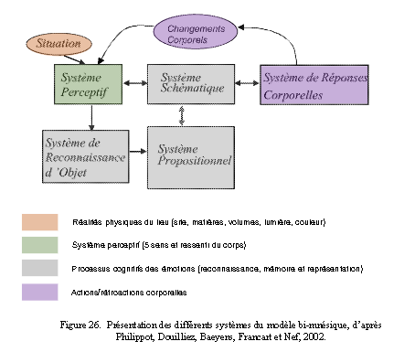
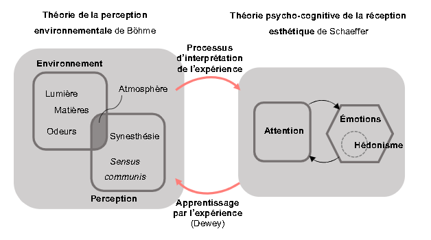
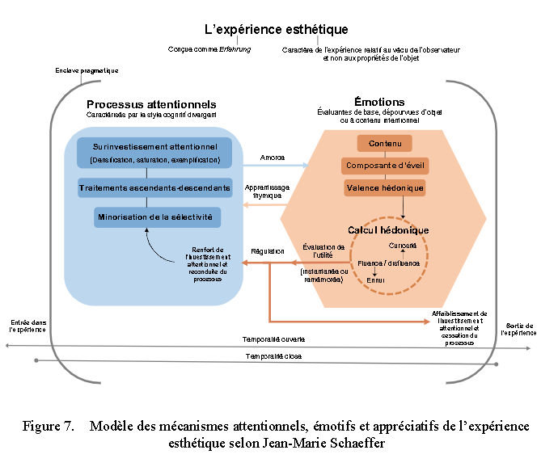
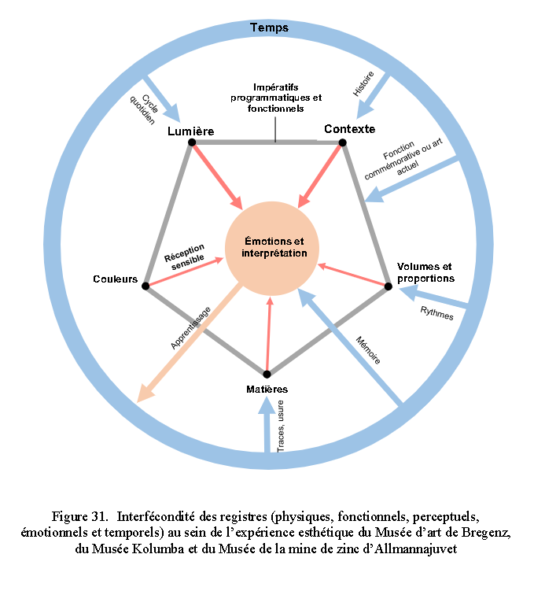
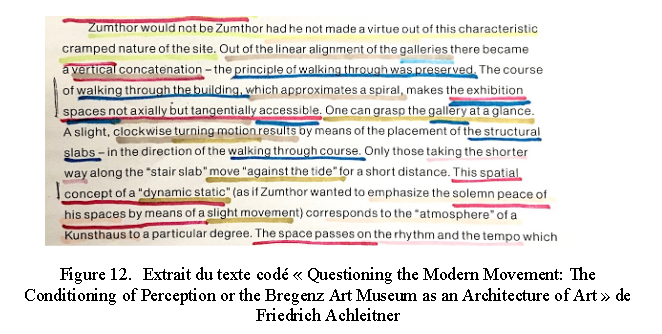
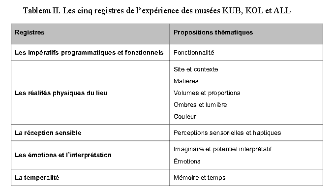
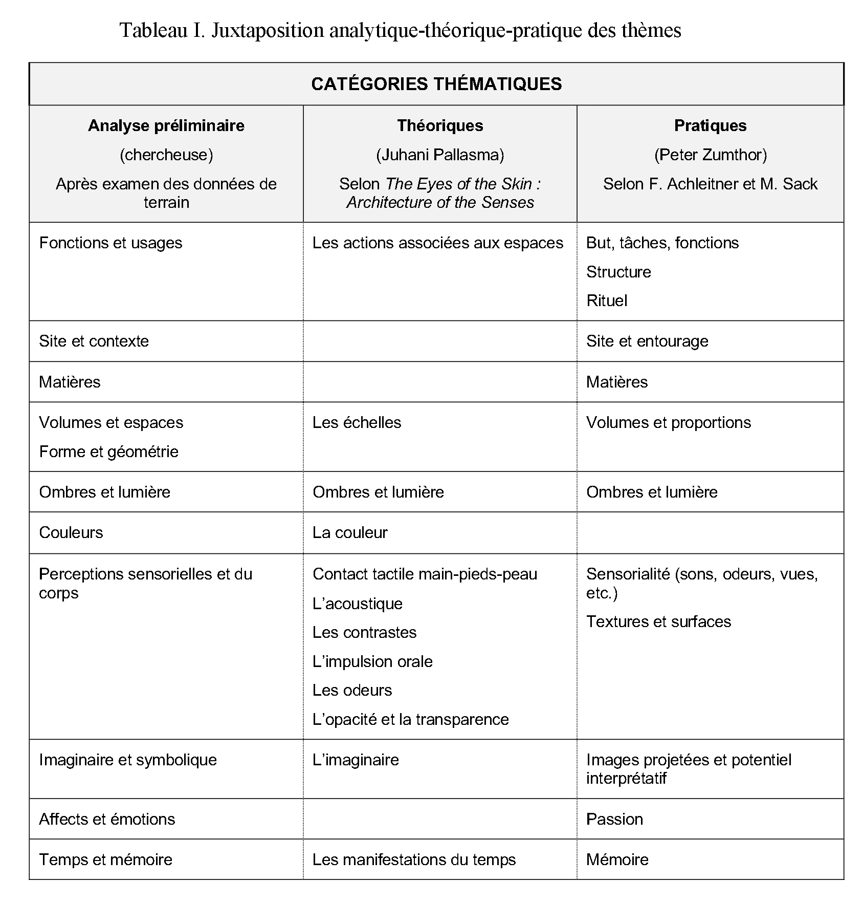

| ZotWeb | article-journal | |
| Src Url | [[Parenteau]] (2018) | |
In view of the growing stylization of everyday life, globalized phenomenon to which many philosophers and sociologists refer as “aestheticization of everyday life”, it seems essential to keep discussions going on the very nature of aesthetic experience, on its production and reception modes within the built environment. Moreover, this dissertation aims towards a deeper understanding of matter’s role as generator of meaningful experience within interior spaces. The research’s theoretical grounds are built upon philosopher John Dewey’s line of thoughts on art as experience, as well as upon philosopher and art historian Jean-Marie Schaeffer on aesthetic relationship through his attentional-emotional-hedonistic triad of processes. In order to contextualize thoughts within interior design’s built perspective, Gernot Böhme’s theory of perception, exemplified by the concept of atmosphere, is also considered. Three museums by Swiss architect Peter Zumthor are surveyed through a collection of narratives and first-hand observations. This fieldwork broadens the study’s aims towards an extended review of founding dimensions of aesthetic experience in interior spaces. Mixed analytical approaches such as theoritical confrontation, modeling and graphic representation as well as inductive reasoning uncovers five main conceptual scopes of interest: functional imperatives, physical realities, sensual reception, emotions and interpretation as well as temporality. The breakdown of these themes according to the extent of their effect on the visitor’s experience and the schematization of their interactions allows conceptual profiles for Bregenz Art Museum, Kolumba Museum and Allmannajuvet Zinc Mine Museum to emerge. The closing discussion strives to determine, on the one hand, whether the surveyed experiences are of aesthetic nature and on the other, to define dimensions of strong ascendency within significant experience of the chosen spaces, such as the “depragmatized” relationship, the emotional pull, the complexity of attentional investment, the context, the matter, the light and the time.

keep discussions going on the very nature of aesthetic experience
Keywords : interior design, aesthetics, materials, Peter Zumthor, atmospheres
Les paramètres essentiels du design d’intérieur et de ses problématiques sont représentés dans un rapport hiérarchique selon leur proximité avec l’usager de l’espace et pour illustrer les liens plus ou moins forts qui les unissent. Nous y reconnaissons quatre ondes qui se déploient autour de l’individu, ce dernier agissant comme pivot central du schéma. Elles représentent la proximité plus ou moins grande qu’entretient l’usager avec l’espace qui l’entoure ; grande proximité au centre jusqu'à proximité faible pour la couche externe du schéma. Un triangle foncé autour de l’individu unit et souligne les trois spécificités dominantes de la pratique de l’aménagement d’intérieur : la vocation du projet, la connaissance de l’usager et le cadre bâti. A u sein de cette triangulation, le projet se fonde et se développe.
L e schéma de LaSalle permet donc la détermination du territoire de l’aménagement des espaces intérieurs au sein duquel se concentre cette étude
La question esthétique en philosophie et en théorie des arts
Jean-Marie Schaeffer.
Gernot Böhme
John Dewey
propositions théoriques de Dewey, Schaeffer et Böhme
1.3 Convergence des propositions théoriques de Dewey, Schaeffer et Böhme
1.4 Question de recherche principale et questions subsidiaires
L’objectif premier de cette étude est de mieux comprendre le rôle de la matière au sein d’un expérience significative de l’environnement construit.

Figure 9.Modèle de convergence des propositions théoriques de Dewey, Schaeffer et Böhme
L’expérience esthétique

Parenteau
Citer: (Parenteau, 2018)
FTag: Parenteau-2018
APA7: Parenteau, R. (2018). La matière comme générateur d’expérience au sein des espaces intérieurs: Peter Zumthor et l’esthétique des atmosphères. 197.
l’esthétisation de la vie »,
John Dewey
Schaeffer
Böhme
Zumthor
induction analytique,
les impératifs programmatiques
l ’expérience esthétique n’a pas la structure d’une résolution de problème
les questions esthétiques semble constituer une considération incontournable pour les disciplines de l’aménagement
triade de processus relatifs à l’attention, aux émotions et au caractère hédonique de l’expérience
En réponse aux mouvements actuels mondialisés d’accélération et d’esthétisation, les disciplines de l’aménagement gagnent à s’attarder au caractère esthétique de l’expérience du lieu. Le terme « expérience », utilisé à outrance dans la foulée du capitalisme-artiste des dernières décennies (Lipovetsky et Serroy, 2013) et empreint d’une incontournable ambiguïté mérite d’être continuellement redéfini à la lumière des réalités contemporaines qui influencent et fondent la pertinence de l’aménagement d’intérieur.
définition des modalités de l’expérience esthétique
L a typologie muséale est une autre caractéristique partagée par les cas sélectionnés.
La levée des informations est d’abord guidée par les objectifs de l’étude ainsi que par la revue de littérature qui en constitue le cadre théorique
vise l’acquisition de connaissances redirigées dans l’action
particularités de la recherche en design
t inspirée par l’approche de recherche phénoménologique.
Le résultat : les experts de l’art n’ont plus le monopole du décret de ce qu’est l’art et de ce qui est de l’art. Les moyens de diffusion sont infinis et accélérés, les communautés de réception sont multipliées et diversifiées
d’interrogation de comptes-rendus d’experts nourrit une première appréhension des circonstances d’un tel vécu.
d’exploration des réalités qui sous-tendent la relation esthétique
d’observation directe
d’interrogation de comptes-rendus
l’influence de la matière sur l’expérience d’un aménagement d’intérieur
La démarche de conception de l’architecte Peter Zumthor présente une forte corrélation avec les discours actuels sur les questions esthétiques en contexte bâti, notamment par rapport au concept d’atmosphère étudié par Gernot Böhme.

-----------------------------------------------------3.
Présence
Pertinence
Seuils
un profil conceptuel condensé permettant de mettre en relief l’importance de chaque proposition thématique au sein des expériences ainsi que les relations qui unissent les thèmes peut être modélisé pour chacun des musées étudiés.


Un codage de couleur a été utilisé pour identifier les appartenances thématique des propositions décrite dans les récits d’expérience des cas.
5 régistres.
Les deux auteurs insistent également sur l’intégration et la dissimulation des systèmes techniques (chauffage, climatisation, acoustique) dans les éléments structuraux ou derrière les traitements de surface.
Dix catégories thématiques convergent et se distinguent : la fonctionnalité, le site et le contexte, les matières, les v olumes et proportions, l’ombre et la lumière, la couleur, les perceptions sensorielles et haptiques, l’imaginaire et le potentiel interprétatif, les émotions, la mémoire et le temps.
L’enseignement des dimensions esthétiques de l’expérience gagnerait sans doute à être évalué d’un point de vue historique autant que culturel.
Réfléchir sur l’articulation pédagogique des discours esthétiques permettant d’éclairer les défis culturels et sociaux actuels auxquels est confrontée la nouvelle génération de designers représente
2.3.1 La documentation écrite
Les écrits qui fournissent un compte-rendu d’expérience détaillé ou l’interprétation d’un vécu atmosphérique sont recherchés.
2.3.2 L’observation directe
2.3.2.1 Les instruments d’observation directe
2.4 M éthode de traitement et d’analyse des données
Trois traditions d’analyse qualitative semblent s’imposer dans le cadre d’études de cas
Chacun des documents écrits fait l’objet d’une fiche descriptive qui facilite son évaluation critique en matière de pertinence, de crédibilité et de représentativité.
La matière devient donc un facteur d’influence au sein de l’expérience esthétique lorsque s’établit un rapport significatif entre l’individu (interprétations cognitives, émotions) et son environnement (contexte, lumière, couleur, proportions, etc.), tout ceci au sein des multiples conceptions du temps (cyclique, linéaire, de durée, etc.).
#results
la phénoménologie serait basée sur l’idée d’intentionnalité de la conscience : la conscience serait toujours intentionnelle, elle serait toujours « conscience de quelque chose ».
cette étude est consacrée à l a manière, au « comment » de l’intervention de la matière dans la construction de l’expérience esthétique du lieu, l’étude de cas permet l’observation d’évènements (une expérience du lieu par l’individu)
#metho #goals
justifie le choix de l'étude de cas
le choix de l’étude de cas
